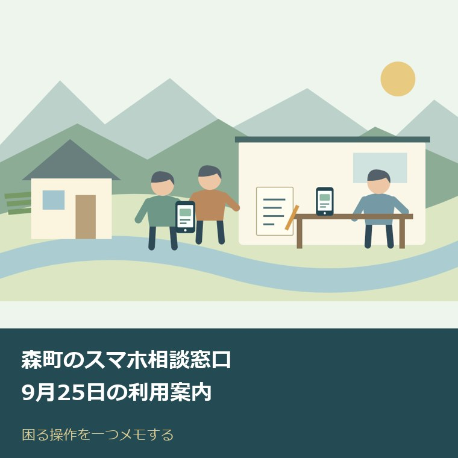
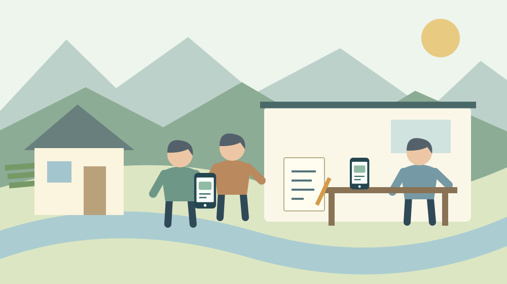

森町のスマホ相談窓口｜9月25日の利用案内
／ 手続き・制度

Q. 森町で親のスマホ操作を相談したい。9月25日は予約が要りますか？
森町のスマホ相談窓口は2026年9月25日（金）9～12時、森町町民生活センター2階講義室Aで開催予定です。町内在住者対象、無料、事前申込不要。混雑時は一組20分までや受付早期終了の場合があります。今日は本人と困る操作を一つメモし、来場前に公式案内を確認してください。
家族が教える時間も、本人が覚える時間も要る
森町に住む親のスマホ操作を、仕事の休憩中や帰宅後に手伝っているご家族へ。電話で画面の様子を聞き、押す場所を説明するだけでも時間がかかります。会って教えるなら往復の移動もあります。支えている家族の手間と、慣れない画面を前にする本人の負担を、どちらも軽く扱いたくありません。
私、大石浩之（磐田市／不動産業）は、スマホが使える人が全部代わりに操作する形だけでは、家族の負担が残ると考えます。相談の担い手を家族の外にも持つこと。そのうえで、本人が一つ操作できるところまで確かめること。2026年9月25日の窓口を、そのための選択肢として整理します。
この記事は2026年9月14日に森町公式情報を確認して書いています。相談会に参加した体験談ではありません。当日の待ち人数や個別の相談への回答を確認したわけでもありません。開催案内で確定できる条件と、私から提案する準備を分けて紹介します。
9月25日は町民生活センター2階、9時から12時
森町公式「森町後援『スマホ相談窓口』開催について」は、2026年5月1日更新の案内です。NPO法人スマジロウによる個別相談として、9月25日（金曜日）を掲載しています。開催時間は9時から12時、会場は森町町民生活センター2階の講義室Aです。
| 項目 | 公式案内の内容 |
|---|---|
| 開催日 | 2026年9月25日（金曜日） |
| 開催時間 | 9時～12時 |
| 会場 | 森町町民生活センター2階 講義室A |
| 対象・料金 | 町内在住の方・無料 |
| 申込み | 事前申込不要 |
| 混雑時 | 一組20分までとなる場合、受付早期終了の場合あり |
| 問い合わせ | NPO法人スマジロウ 053-570-2323、平日10時～18時 |
「12時まで開催」と「12時直前でも受け付けてもらえる」は同じ意味ではありません。町の案内には、混雑状況により受付を早めに終了する場合があると明記されています。事前申込が要らない窓口でも、到着すれば必ず相談できるとは限らない点が、利用前に押さえたい条件です。
一組20分という時間も、すべての来場者に固定された予約枠ではありません。公式の表現は、混雑時にその長さまでとなる場合がある、というものです。私は、相談したい操作を一つ優先しておくと、限られた時間を説明だけで使い切りにくくなると考えます。
町のページが案内する問い合わせ先は、NPO法人スマジロウです。電話は053-570-2323、受付は平日10時から18時です。相談会の開始時刻9時とは異なります。対象や付き添いについて確認したい場合は、開催当日の9時に電話が通じると見込まず、前もって問い合わせる段取りにします。

「使い方が分からない」を、一つの操作にする
森町のスマホ相談窓口は、スマホ操作やアプリの使い方などの困りごとを対象にしています。公式案内は初心者だけでなく、もっと活用したい人にも参加を呼びかけています。ただし、個別アプリのすべての問題に対応するという保証や、修理・契約手続きの一覧は掲載されていません。
準備として私が勧めたいのは、「スマホが分からない」を本人の言葉で一つの動作にすることです。たとえば「家族から来た写真をもう一度開きたい」「音量を変えたい」。これは相談内容の例であって、その操作への対応を主催者に確認したものではありません。何をしたいかが伝わるメモにします。
どの画面で止まるかまで分かれば、その直前の操作も添えます。「アプリを開けない」のか、「開いた後に探したいボタンが見つからない」のかで、説明の出発点が変わります。正しい専門用語を調べる必要はありません。本人が普段呼んでいる名前を、家族が勝手に別の言葉へ直しすぎないようにします。
町の情報を受け取る操作なら、森町公式「森町LINE公式アカウント」の名称は「静岡県森町」、IDは「@shizuoka-mori」と掲載されています。町の名前で検索する際に、どのアカウントを見ているか照合する材料になります。公式ページには登録方法も案内されています。
町のLINE公式ページは表示更新日が2021年2月1日で、配信サービスについて経過した記述も含みます。登録名を確かめることと、現在の配信内容を確かめることは分けてください。受信先の整理は森町の防災LINEとちゃっとメールを整理した記事で確認できます。古い案内を、そのまま現在のサービス内容と決めつけないためです。
森町での暮らしへの影響は、移動と付き添いまで考える
9月25日のスマホ相談は平日午前の対面開催です。本人が町民生活センターへ行く方法と、家族がどこまで付き添えるかを別に考える必要があります。仕事をしている家族が送迎する場合、相談そのものの時間に加えて移動と待ち時間も予定に入ります。
私は「無料だから行けばよい」で話を終えたくありません。町内でも出発地点は家庭ごとに違い、往復にかかる時間を一律には書けません。まず自宅から会場への経路を一つ確かめ、帰りの連絡方法を本人と決める。その小さな確認が、付き添いの人の仕事の段取りにも関わります。
会場は町民生活センターの2階講義室Aです。施設名だけを覚えて、別の相談で利用する保健福祉センターへ向かわないように、紙にも正式な会場名を書きます。階段などの移動に不安がある場合、会場内の動線や利用できる設備は主催者へ確認してください。この記事では設備の実地確認はしていません。
家族の役割も「全部付き添う」か「何もしない」かの二択にしなくてよいと考えます。前日にメモを一緒に作る人、会場までの行き方を確かめる人、帰宅後に操作を聞く人を分けられる家庭もあります。できる範囲を先に伝えれば、一人の家族だけが暗黙に引き受け続ける状態を見直せます。
良い点は、家族以外に聞ける個別相談であること
森町のスマホ相談窓口は、町内在住者が無料で利用できる個別相談です。決まった講義を一斉に受ける形とは違い、自分の困りごとを持ち込めます。私は、本人と家族が普段つまずく一操作を説明できる場が町内にあることを、暮らしを支える具体的な利点だと受け止めます。
事前申込が不要なのも、予約フォームの入力で止まってしまう人にとって入口を一つ減らせます。スマホの使い方を聞きたいのに、最初にスマホで複雑な申込みを求められない。この窓口の条件には、その分かりやすさがあります。利用には町内在住という対象条件と、当日の受付状況の確認が残ります。
家族以外の人から説明を受けるときは、本人が自分の言葉で困りごとを話す機会にもなります。私は、家族が横から先に答えを言い切らず、必要なところだけ補う準備ができると思います。ただし、付き添いの可否や相談中の同席方法は公開案内だけでは確認できません。必要なら事前に問い合わせてください。
相談員の存在も、家族の代わりに何でも引き受ける無限の受け皿ではありません。混雑時の時間制限は、相談する側だけでなく、その場を回す担い手の時間にも関わります。聞くことを一つ選ぶ準備は、本人が説明を理解する余裕と、次に待つ人の機会を両方考えた使い方になります。
注文したい点は、相談できる範囲と受付の見通し
森町の開催案内には、混雑時の時間制限と早期終了の可能性があります。一方、当日の待ち時間や個別の相談内容への対応可否までは分かりません。私は、遠回りして来場する家族ほど、何を聞けば事前に判断できるかが見える案内を望みます。相談員個人への注文ではなく、利用前の情報の出し方への希望です。
端末の故障、料金契約、アカウントに入れない問題まで、この窓口で解決するとは書けません。操作の質問に見えて、契約先やアプリ提供元の確認が必要な場合も考えられます。今日は「どの操作で困るか」を一つメモし、その内容を窓口へ伝えて相談対象か聞くところから始められます。
家族だけが親の端末を持参して相談できるかも、公式案内には明記されていません。対象は町内在住者です。町外に住む子が代理で参加できると読み替えないでください。本人の来場が難しい場合は、問い合わせ先へ本人の居住地と希望する相談方法を伝えて確認します。
予約のない窓口に、特定の時刻なら必ず空いているという助言もできません。私は、早く着けば全問題が解決するという書き方には迷いがあります。家族には出発を早める負担があるからです。確実な空き時間は不明としたうえで、受付終了の可能性を含めた予定を組むのが誠実だと考えます。
対案・結論：今日は本人と、困る操作を一つメモする
スマホ相談の準備として今日できる一歩は、本人と一緒に困る操作を一つ書くことです。「何をしたいか」「今はどこで止まるか」を一文ずつでも構いません。9月25日の会場に持って行く質問の優先順位を決めるだけなら、家族が操作方法をすべて調べ直す必要はありません。
メモは本人が読みやすい紙でも、使い慣れた記録方法でも構いません。スマホの中だけに保存すると、そのメモを開く操作で困る可能性もあります。私は本人が確実に取り出せる方法を選びます。書式を整えるより、本人が何を聞きたいかを一緒に確認する時間を優先します。
質問の紙に、パスワードや認証コードを並べておくことは勧めません。相談の目的を書いた紙と、秘密に管理する情報は分けます。会場で画面を見せる際も、どの情報を表示する必要があるか確かめてから進める提案です。主催者が指定する持ち物一覧として書いているわけではありません。
利用する端末は、普段困っている画面を確認できる状態で持参する準備が考えられます。充電、通信が必要か、本人が画面を開けるかを前日までに見ます。特別な機器や書類が必要かは公開案内で確認できていないため、不明点があれば主催者へ問い合わせてください。
当日、相談員の説明を聞いた後に本人が同じ操作を試せるか、時間の範囲でお願いするのも一案です。家族が横で完成させると、帰宅後に本人だけで再現できるかが分かりません。「今日は写真を開くところまで」と到達点を一つにしておけば、できたことと残った疑問を分けて記録できます。
相談と申請の段取りを分ける考え方は、相談予約と手続きを分けて準備する記事でも扱っています。今回の窓口自体は事前申込不要です。他の窓口の記事を読んだときも、その予約条件を9月25日の相談会へそのまま当てはめないでください。
家族に残す記録は、操作の順番と次の相談先
スマホの相談後に家族へ残す記録は、相談した日、確認できた操作、まだ解決していないことの三つで足ります。私は、端末の設定を全部書き写すより、本人が次回迷いそうな一操作を記録する方が使いやすいと考えます。記録づくりが、新たな家族の宿題にならない範囲にします。
説明を自分の言葉にするときは、「右上」「丸い絵」だけでなく、表示される文字も書ければ補います。画面の配置が変わった際に、位置だけの記憶では見つけにくくなるためです。端末やアプリが変われば同じ手順が使えない場合もあるので、確認した端末と日付を添える提案です。
家族間で共有するのは、本人が共有してよいとした範囲にします。連絡先を一人に集める場合も、誰が内容を知っているかは本人に伝えます。見守りの準備との分け方は森町の見守りSOS登録を家族で確認する記事も参考になります。スマホ相談が見守り登録を兼ねるわけではありません。
家や暮らしの連絡先を整理する際も、スマホの中にある情報と、家族が必要なときに見つけられる情報は別です。実家の管理を担う人が交代するなら、相談先の名前や連絡方法を本人と共有する一歩が役立ちます。端末の全情報を無条件に家族へ渡すという意味ではありません。
大石の視点：代わりに全部押すだけでは、負担は消えない
森町のスマホ相談を、私はデジタル化の入口を人が支える場として見ています。家族が代わりに全部押す形を、便利になったとは呼びたくありません。画面の操作が終わっても、本人が判断できず、次も同じ家族を呼ぶなら、担い手の負担は別の場所に残ったままだからです。
私は、本人の理解を確認する時間まで含めて便利さを考えたいと思います。不動産の仕事でも、書類がそろったことと、持ち主が内容を理解して決められることは別です。ここでは特定の相談実話ではなく、私の判断基準として書いています。スマホでも、本人の手元に判断を残す方向を選びたいです。
町の人と家族がすでに支えている努力を、窓口の紹介だけで置き換えることはできません。それでも、家族以外に聞く相手ができれば、一人へ集中した役割を分けるきっかけになります。私には当日どこまで解決できるか分かりませんが、本人と質問を一つ選ぶ準備なら、開催前から始められます。
9月25日の予定を確かめ、質問を一つ持って行く
森町のスマホ相談窓口は、2026年9月25日の9時から12時、森町町民生活センター2階講義室Aで開催予定です。町内在住者が無料で利用でき、事前申込は不要です。混雑時の20分制限と受付早期終了の可能性も、家族へ渡す案内に一緒に書いてください。
来場前には、下記の森町公式案内で変更の有無を再確認してください。今日の一歩は、本人に「どの操作ができると助かるか」を聞いて一つメモすることです。教える家族が全部を解決してから相談へ行く必要はありません。困っている場所を伝えられるところまで準備すれば、相談の入口になります。
よくある質問
森町の相談窓口を利用する前に、次の3点を確認できます。
9月25日のスマホ相談窓口は予約が必要ですか？
森町の2026年9月25日のスマホ相談窓口は、事前申込不要です。9時～12時、森町町民生活センター2階講義室Aで開催予定。町内在住者は無料で利用できます。ただし混雑時は一組20分までとなる場合や、受付を早めに終了する場合があります。到着すれば必ず相談できるという保証ではないため、来場前に公式案内の変更も確認してください。
どのようなスマホの困りごとを相談できますか？
森町公式案内では、スマホ操作やアプリの使い方などの困りごとを扱う個別相談とされています。初心者も、もっと活用したい人も対象です。修理や契約変更、個別アプリのすべての問題への対応は確認できていません。本人と困る操作を一つメモし、対応範囲が気になる場合はNPO法人スマジロウの053-570-2323へ確認してください。
町外に住む家族だけで親の端末を持参してもよいですか？
森町のスマホ相談窓口の対象は町内在住者です。家族だけの代理参加や付き添いの条件は、公式案内に明記されていません。本人の居住地と希望する相談方法を、NPO法人スマジロウへ事前に確認してください。問い合わせ電話は053-570-2323、受付は平日10時～18時です。開催当日の相談開始9時とは異なります。

参考にした公式情報
- 森町『森町後援「スマホ相談窓口」開催について』2026年5月1日更新（2026年9月14日確認）
- 森町『森町LINE公式アカウント』名称・ID・登録方法、表示更新日2021年2月1日（2026年9月14日確認）
最終確認日：2026-09-14。制度・開催状況は変更される場合があります。最新情報は公式窓口へ、個別の法律・登記・医療上の判断は各専門家へ確認してください。